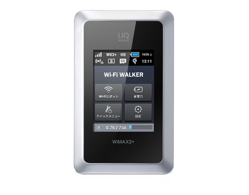

毎月の料金が安くてキャッシュバックが貰える端末がオトク！
モバイルwifiのメリットを挙げましたが、いざwifiルーターを選ぼうとすると各社多くの機種を販売していて迷ってしまいます。
消費者目線でさまざまな観点から比較を行った結果、オススメ機種をランキング形式でご紹介します！
１位はEMOBILEの「Pocket WiFi GL10P」です。
料金は他社比較で最安値であることに加え、全国の政令指定都市を全てカバーしています。
ただし、速度制限※があるので動画や音楽を毎日１時間以上視聴しない方にオススメです。

|
性能別 |
月額料金 |
利用エリア |
速度 |
内蔵電池 |
|---|---|---|---|---|
| 他社比較 |
◎ |
△ |
○ |
○ |
２位はUQ WiMaxの「Wi-Fi WALKER WiMAX2+ HWD14」です。
料金はE-Mobileの次いで安いことに加え、何よりも速度制限がないことが一番のメリットです。他社では動画や音楽のダウンロード量が７GBを超えてしまうと実質使用できなくなってしまいますが、この端末であればそんな心配は不要です。
|
性能別 |
月額料金 |
利用エリア |
速度 |
内蔵電池 |
|---|---|---|---|---|
| 他社比較 |
◎ |
△ |
○ |
○ |
あああ
ドコモやソフトバンクによれば、この7GBは、動画にすると１日に１時間見られ、 １曲数分の音楽では１日60曲ダウンロードできるというのが公式の見解のようです。
しかし、実際のところは？
感覚的には動画を毎日10分見ていると超えてしまいます。 音声だと音質にもよりますが10分〜30分です。 例えば、動画を見ている時に、今見ているシーンは以前見たことがあるから飛ばして先を見たいなーとか、今の展開に繋がる文脈がよくわからなくて、前に遡ってもう一度視聴したいと思ったことはありませんか。 通常、動画を視聴している時にはストリーミングを行っているので、このような時に、例えば過去に遡って再生したり、先の場面を見る時に重複してデータ通信を行ってしまうことがあり、 実際には10分しか動画を見ていないのに、実際のデータ量は１時間分以上であることがあります。「私は普段から動画も音楽も視聴しない！」という方も注意が必要です。 例えば、最近のスマホやデジカメは高画素数ですので、スマホで撮影した画像ファイルを頻繁に転送していると気づいたら1GBを超えていたということはよくあります。 写真だけで7GBを超過することは滅多にありませんが、こうした点には注意が必要です。
7GBを超えるとどうなるか
この7GBを超過してしまうと、それまで100Mbps以上のスピードでストレスなく閲覧できていたインターネットがその1000分の１のスピードに落ちてしまいます。
1000分の１のスピードと言っても、実質上使用は無理です。100Mbpsでは１秒で見られていたウェブページを閲覧するのに５分以上かかることもあります。殆どの場合、テキストだけのウェブページすら表示できません。
7GBの範囲内では快適なインターネットは困難
正直、この制限は私にとってかなり厳しいものでした。
外出先でインターネットをよく見ますし、その中でFacebookやTwitter等で気になる人が紹介している動画を見ることもあります。
最近は様々な動画メディアが流行していることも一因です。
結論として、この7GBでインターネットを快適に使用するというのは困難です。というか、無理です。
解決策
そのような問題点を解決するのがこちらの無線wifiモバイルルータです。モバイルルータでありながら、上記のような速度制限はありません。
しかも今なら12000円のキャッシュバックキャンペーンがあります。
もし外出先でストレスなくインターネットに接続したい方におすすめです。